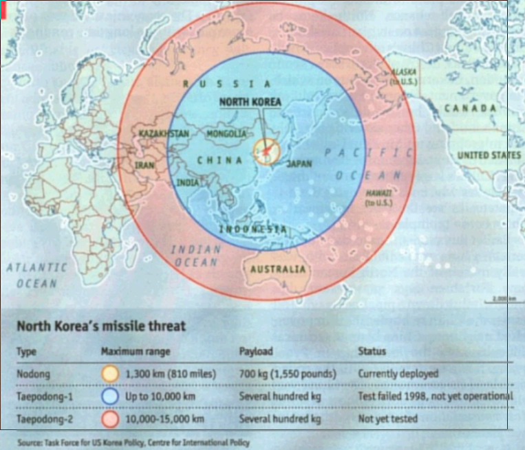
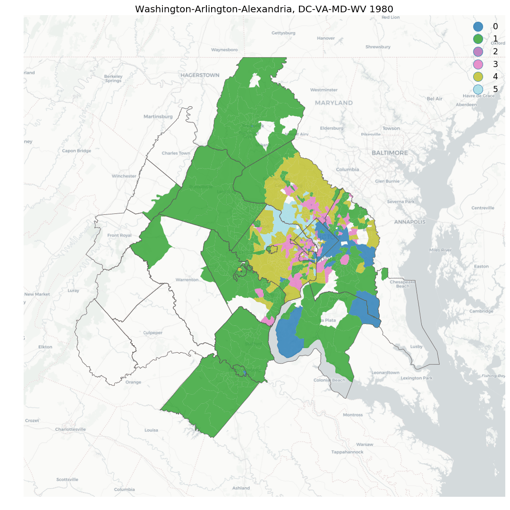
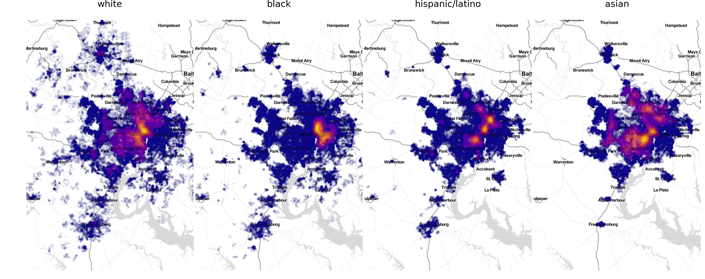
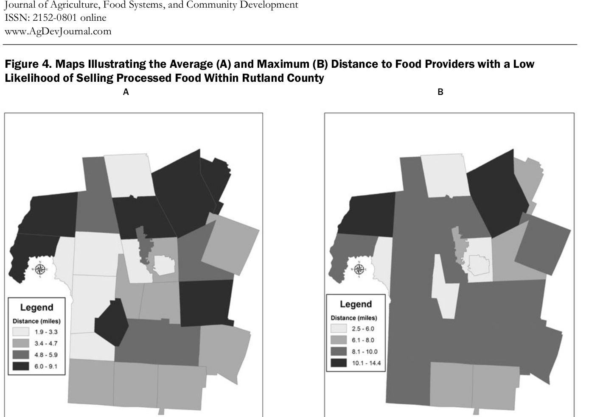
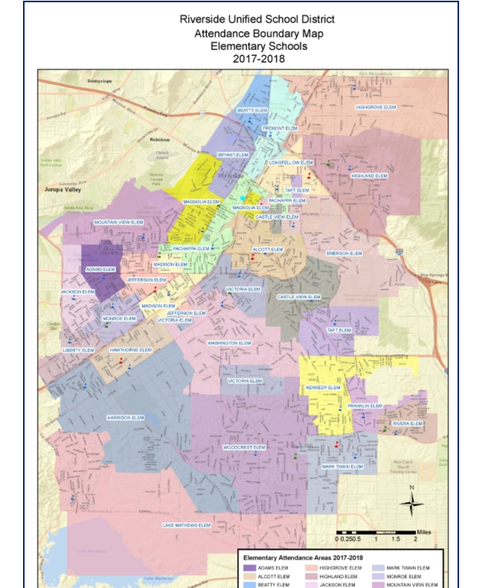
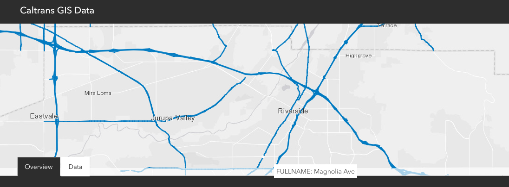
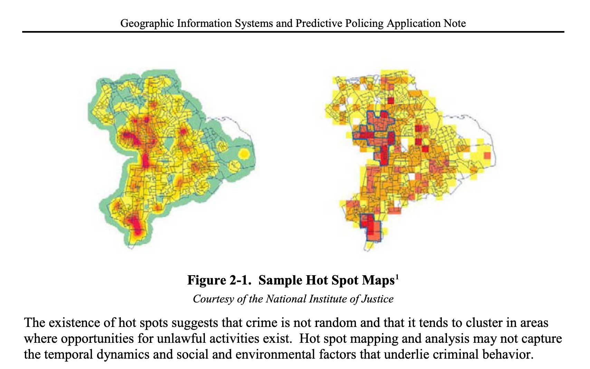

Introduction to GIS¶
Overview¶
In this lecture we provide the context for GIS in public policy. The objectives are:
Introduce the concept of spatial thinking
Define GIS
Provide an overview of motivations for and applications of GIS in public policy
Spatial Thinking¶
The focus of this course is on developing:
spatial thinking
spatial skills
Origins¶

Earliest human writing
5,500 BP
Early Spatial Analysis¶

Modern (lack of) Spatial Thinking¶

Modern Spatial Thinking¶

GIS¶
The acronym GIS can take on multiple meanings:
Geographic Information Systems or GISystems
Geographic Information Services or GIServices
Geographic Information Science or GIScience
Geographic Information Systems¶
Geographic: refers to a specific on or in relation to the Earth’s surface
Information: data to which some value or interpretation has been added
Systems: a system designed to perform a wide range of function on and with GI
Geographic Information Services¶
Provision of services
Location based services
Private and Government
Geographic Information Science¶
The science behind GISystems
Coined by Michael Goodchild in 1992
Acronym: GISCIENCE
GIS and Public Policy¶
Why GIS and Public Policy?¶
Everything we do takes place at some time and some place
Spatial context matters
Policy implementation should consider geographical dimensions
Policy evaluation (analysis) from a spatial perspective
Positive Applications of GIS in Public Policy¶
Using GIS to do policy analysis
GIS derived measures
Spatial externalities and spillovers
Monitoring
Using GIS to describe the world
GIS based policy analysis¶
Environmental Disparities and Equity Analysis¶

Spatial Criminology¶

Neighborhood Change¶
 source
Segregation¶
 source
GIS derived measures¶
Food Deserts¶

Accessibility to Parks¶

Detecting Land Use Change¶


Normative Applications of GIS¶
Prescriptive
Using GIS to change the world
School Redistricting¶
 source
Transportation Planning¶
 source
Geographical Targeting¶
 source